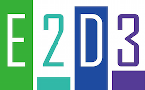
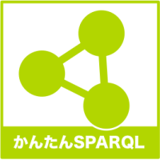

基盤技術部門
応募作品一覧
| エントリー番号 | 作品の名称 | 応募者 | 応募概要 | エントリー情報 | |
|---|---|---|---|---|---|
| b001 | SPARQL Creator | 藤本椋也, 年岡晃一 | SPARQLエンドポイントのURLを入れるとクラスごとに自動的にSPARQLを生成。 検索結果の表を見ながらGUI的にSPARQLを編集できるツールです。 |  | |
| b002 | TEXT2LOD ～テキスト情報のLOD化に向けたWebAPIの公開～ | 川村 隆浩，大須賀 昭彦 | テキストを入力すると，文中からトリプル ブラウザのアドレス欄でお試しください． |  | |
| b003 | オープンデータプラットフォーム | 株式会社jig.jp | 自治体が保有するデータを簡単に５つ星オープンデータに変換し、公開するＡＳＰサービス | ||
| b004 | RDFエクスプローラ | 荒本道隆 | SPARQLエンドポイントにアクセスし、実データを図化するツールです。データの構造を素早く理解することができます。 | | |
|  | b005 | E2D3 ver. 0.3 （Excel to D3） | E2D3 ver. 0.3 開発チーム | オープンデータを簡単にビジュアライズできるオープンソースソフトウェアです． | AGPL |
| b006 | オープンデータ作成マッピングツール | 高木治夫 | 防災情報、トイレ情報、バリアフリー情報、観光情報など、位置情報を持ったデータの作成や修正が簡単にできます。 | ||
| b007 | インターネット上の時系列データを機械的にRSSでクローリング・RDFデータベース化する基盤技術 | 村田健史 | インターネット上で公開されているあらゆる時系列データをRSS1.0形式でクローリングし、メタ情報をRDFデータベースに保存するデータ収集とLODデータベースを機械的に構築する基盤技術。 | ||
| b008 | GeoNames.jp | インディゴ株式会社 | 日本版 GeoNames です。日本国内の地名に URI を付与して提供する基盤です。 |  | |
| b009 | D'ownLOD 『LODアプリケーションを手軽に作って、ダウンロード後、すぐ実行。』 | 的野晃整, 中村章人, 小島功 | LODアプリケーションを作成するためのプラットフォームです。
SPARQLとSQLとHTMLの定義のみで、Webアプリが自動作成されます。 Webアプリはダウンロードした後、すぐに実行できます。 | | |
|  | b010 | 誰でもかんたんSPARQL実行 | 下山 紗代子 | SPARQLクエリの書き方を段階的に学んでいくための補助ツールです。 | |
| b011 | 衆議院提出議案自動取得システム | 岩月憲一 | 衆議院に提出された議案を、国会回次毎に取得し、関連する省庁のWebページから法案の概要リンクを取得するためのスクリプト。RDF（Turtle）形式と、タブ区切りテキスト（TSV)形式で出力する。 | Apache License 2.0 | |
| b012 | 経路検索API | 石井学 | 始点と終点を指定すると経路がgeojson形式で返ってくるAPI | Apache2 | |
| b013 | インメモリ型高速SPARQLエンジン：FROST | 藤原浩司，兼岩 憲（代表） | SPARQLクエリの検索エンジンを備えた本格的なインメモリ型RDFデータストアです．特に，データインデックス化とクエリ解決手順の効率化による高速検索と，高い圧縮率で簡潔なRDFデータ格納を両立します． | ||
| b014 | LODチャレンジDomain Name System基盤(アカデミック) | 中山データベース合同会社 | LODチャレンジ2014エントリー用Domain Name System基盤 |  | |
| b015 | When.exe Ruby版 | 須賀 隆 | ISO19108の時間スキーマを用いた語彙集とその支援ツールです。 | https://github.com/suchowan/when_exe/blob/master/LICENSE.ja.txt | |
| b016 | dangerzone-sparql | 上田 洋 | LODチャレンジJapan2013データ提供パートナー賞受賞作品「トイレ危険地帯」 をSPARQLクエリを書き換えるだけでトイレ以外の「危険地帯」をビジュアライズできるようにしました。 | | |
| b017 | 街灯これくしょん | 松田 裕貴，玉井 雄一郎，新井イスマイル | ゲーム感覚で「街灯の明るさ」を収集し、 《どの夜道が安全なのか》という情報を生成する基盤システム | ||
| b018 | LODlinker 2.0 | 大谷世紀,藤本椋也, 年岡晃一 | 全世界のLODを収集・集約し、SPARQL検索をかける事が出来るシステムです。
クラスURIの検索、構造確認を始め、SPARQLエンドポイント、RDFファイル問わず複数のLODに横断検索を行えます。 | |